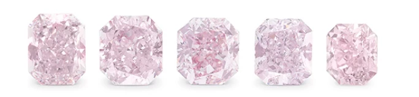
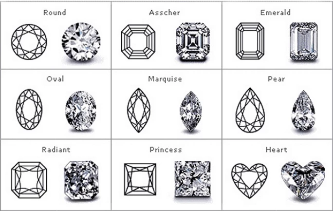
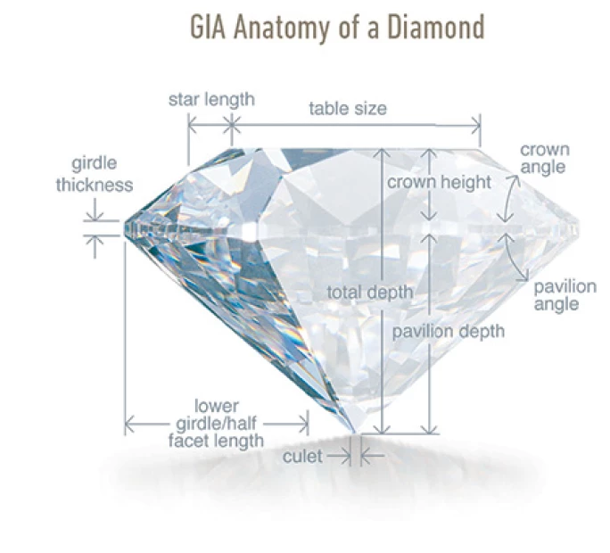

譯自 Lydia Dokko · Sotheby's
邀您以專家慧眼，探索鑽石奧秘。本文為您揭示八大要訣，從淨度、切工到克拉重量，助您從容選購完美鑽石。
初探鑽石殿堂者，常覺步入迷宮深處。世人常說：鑽石之道，恰似謎中有謎，引人入勝又令人躊躇。美國寶石研究院（GIA）創立的「4C」評級系統，包含色澤、切工、淨度、克拉重量，雖廣為人知，然而選購鑽石，尚有諸多玄機。
鑽石之美，千年傳頌不絕。古希臘人視鑽石為諸神灑落凡間的淚珠，而羅馬人則深信鑽石乃是夜空墜落的星辰碎片。古埃及人更篤信無名指有一「愛之脈」直通心臟，故以鑽戒飾之，千年傳承。鑽石不僅承載著浪漫傳說與歷史故事，更以超凡脫俗的光彩，千百年來令觀者為之傾心。
鑽石之選，最重要在於慧眼識珠。恰如真摯的愛情，每顆鑽石都以獨特魅力吸引凝視者的目光：或是流光溢彩的璀璨、或其色澤純粹的靈動、或是切工完美的和諧。步入鑽石世界之前，深入了解決定鑽石價值與美感的關鍵要素至關重要。現由蘇富比專家為您細說八大要訣，助您如資深行家般明智選購鑽石珠寶。

五顆鑲嵌鑽石
1. 克拉之謎
克拉作為衡量鑽石重量的世界通用單位，淵源可追溯至地中海畔的豆科植物「長角豆」，其種子曾在古時作為寶石計重的標準。一克拉等於 0.2 克。克拉重量是決定鑽石價值的四大要素之一，由於大克拉鑽石在自然界中越見稀罕，其價值亦隨之水漲船高。
2. GIA 證書之意
GIA 是全球最受推崇的獨立鑑定機構，在鑽石界享有崇高聲譽。GIA 證書就似每顆逾一克拉鑽石的尊貴身份證，細緻記錄寶石的品質特性，涵蓋舉足輕重的 4C 評級。此權威證書不僅確保鑽石的真實性，更為買家提供可靠依據，助大家在璀璨世界中作出明智抉擇。
3. 4C 精要
4C 標準涵蓋色澤、淨度、切工及克拉重量，為評估鑽石品質與價值的關鍵準則。鑽石色澤評級始於 D 級，代表無色透明，依序至 Z 級，代表可見的黃褐色調。淨度則從「無瑕」至「包含物 3 級」，反映內含物或可見瑕疵的程度。

鑽石與寶石形狀
切工或可說是鑽石光彩的靈魂所在。GIA 以鑽石切面比例評定切面與光線互動的效果，評級從「極優」至「不良」不等。精良切工的鑽石必然較粗劣者更顯光彩奪目。克拉重量雖為衡量鑽石大小的標準，但若其他三 C 表現欠佳，較重克拉亦未必更顯價值。
4. 色澤評級緣何始於 D 級
在 GIA 確立 4C 標準前，業界曾採用 A 至 C 級評級，並衍生出 AA 或 AAA 等變體。不過，此制度缺乏統一標準，易生混淆。為建立清晰明確的系統，GIA 特以 D 級為色澤評級之始，便利消費者比較鑽石品質。
5. 鑽石光彩之謎
鑽石光彩主要取決於切工品質。切工影響光線進入鑽石並在其中折射的方式，進而決定璀璨程度。圓形明亮式切工通常最顯光彩，而祖母綠形或公主方形等切工亦各具特色。即使是完美切割的祖母綠形鑽石，礙於其較長且淺的切面，光彩亦不及圓形切工。切工越近完美，整體光彩越發奪目。

鑽石解剖圖
6. 鑽石堅固之說
鑽石為地球上天然生成最堅硬的物質，在莫氏硬度計上位列第十級。非凡硬度使鑽石極具抗磨損性。然而，縱使鑽石堅不可摧，若遭受極端外力或保養不當，仍可能受損。為確保鑽石珠寶的持久光彩，應妥善收藏，單獨存放，避免與其他珠寶相互磨擦。
7. 半克拉價值之謎
克拉重量雖為決定鑽石價值的重要因素，不過其計價並非簡單的線性關係。鑽石價格隨克拉重量增加而急劇攀升，所以一克拉鑽石的價格往往遠超 0.5 克拉同等品質鑽石。此外，切工、淨度與色澤等因素亦會影響整體價值，致使相同重量的鑽石可能因其他品質特徵而價格懸殊。
8. 金伯利進程
金伯利進程是國際間致力防止「血鑽」（即用於資助叛亂活動和暴力行為的鑽石）交易的重要倡議。進程建立認證制度，確保流向消費市場的鑽石經由合乎道德的途徑開採。世界鑽石理事會的保證體系更進一步要求供應商在每筆交易中提供保證聲明，確認鑽石來源合法，並符合金伯利進程規範。
選購鑽石令人雀躍，同時也是一門深奧學問。不過，憑藉正確的知識，您定能如專家般從容遊走鑽石世界。透徹理解 4C 標準、GIA 證書的重要性，以及合乎道德採購的意義，將助您作出明智而深思熟慮的選擇。無論您為鑽石的獨特光彩、悠久歷史，抑或稀有特質所傾心，謹記這些專家要訣，必能助您選得與珍貴時刻相襯的完美寶石。